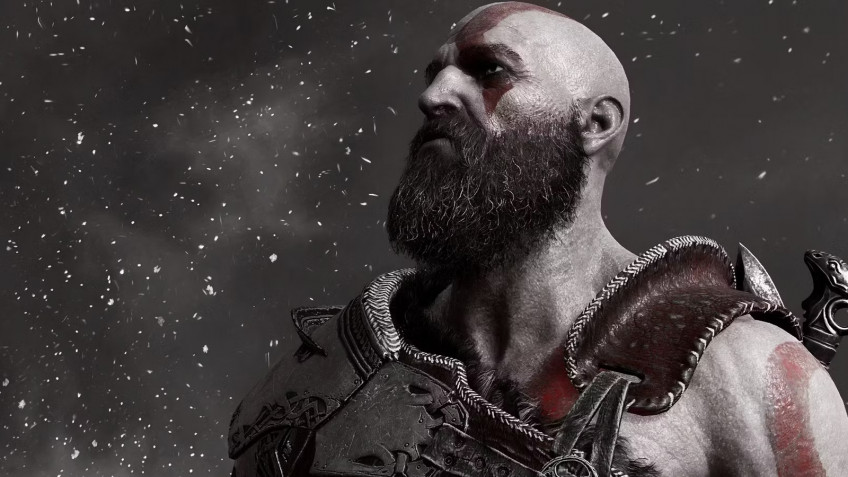

В этом месяце прошла ежегодная The Game Awards, которая заполнилась геймерам впечатляющими анонсами и другими занимательными моментами. Одним из последних стала речь актёра Кристофера Джаджа, известного по роли Кратоса в God of War 2018 года и God of War: Ragnarok. TGA 2022 принесла Джаджу долгожданную награду за лучшую актёрскую работу.
Но это не единственное его достижение того вечера. Дело в том, что речь Джаджа после вручения награды длилась почти восемь минут — 7 минут 59 секунд, если быть точнее. А это уже можно считать новым мировым рекордом. До Кристофера Джаджа рекорд по длительности речи на церемонии вручения наград принадлежал англо-американской актрисе и певице Грир Гарсон.
На церемонии вручения премии «Оскар» в 1942 году она говорила 5 минут 30 секунд. Новый рекорд, установленный «Кратосом», не зафиксирован в Книге рекордов Гиннесса, но возможно, что организаторы The Game Awards займутся решением этого вопроса.